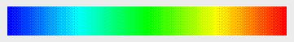

| vfr - Volflex rendering API - |
class vfrDatamap
Class Hierarchy
Header files
- #include "vfrDatamap.h"
- vfrDatamap()
- デフォルト設定のvfrDatamapオブジェクトを生成する
属性の初期値(デフォルト値):
色エントリ数 = 2
| | 最小値 | 最大値 |
| データ値 | 0.0 | 1.0 |
| Hue | 0.666667 | 0.0 |
| Saturation | 1.0 | 1.0 |
| Value | 1.0 | 1.0 |
| Alpha | 1.0 | 1.0 |
- vfrDatamap(const float min, const float max)
- 最小値=min、最大値=max, 色エントリ数=2 のvfrDatamapオブジェクトを生成する
- vfrDatamap(const int nc, const float* h, const float* s, const float* v, const float* a)
- 色エントリを指定してvfrDatamapオブジェクトを生成する
- nc 色エントリ数
- h hue成分(nc個)
- s sat成分(nc個)
- v val成分(nc個)
- a alp成分(nc個)
- vfrDatamap(const vfrDatamap& org)
- コピーコンストラクタ
- org コピー元のvfrDatamapオブジェクト
- virtual ~vfrDatamap()
- vfrDatamapオブジェクトを破壊する
Public Methods / Variables
- void operator=(const vfrDatamap& org)
- 代入オペレータ
- org 代入元のvfrDatamapオブジェクト
- void setMinMax(const float min, const float max)
- 最小値、最大値を設定する
- min 最小値
- max 最大値
- float getMin() const
- 最小値を返す
- float getMax() const
- 最大値を返す
- int getNumCol() const
- 色エントリ数を返す
- Bool setHue(const int ne, const float h)
- 指定した色エントリのHue(色相)を設定する。成功すればTRUEを返す。
- ne 色エントリ番号
- h 対応する色相(0.0 〜 1.0)
- const float* getHue() const
- Hue(色相)リストを返す
- Bool setSat(const int ne, const float s)
- 指定した色エントリのSaturation(彩度)を設定する。成功すればTRUEを返す。
- ne 色エントリ番号
- s 対応する彩度(0.0 〜 1.0)
- const float* getSat() const
- Saturation(彩度)リストを返す
- Bool setVal(const int ne, const float v)
- 指定した色エントリのValue(明度)を設定する。成功すればTRUEを返す。
- ne 色エントリ番号
- v 対応する明度(0.0 〜 1.0)
- const float* getVal() const
- Value(明度)リストを返す
- Bool setAlp(const int ne, const float a)
- 指定した色エントリのAlpha(透明度)を設定する。成功すればTRUEを返す。
- ne 色エントリ番号
- a 対応する透明度(0.0 〜 1.0)
- const float* getAlp() const
- Alpha(透明度)リストを返す
- void datamap(const float data, vector4 &rgba) const
- 与えられた値に対する色を取得する
- data データ値
- rgba データ値に対応する色(RGBA)
Description
vfrDatamapクラスは、設定されている最小値と最大値の色から、
与えられたデータ値に対応する色を計算する機能を実装したクラスである。
vfrDatamapクラスはデータ値の最小値、最大値と
それに対応するHSVAの色値を保持する。
datamap()メソッドにあるデータ値が与えられると、
そのデータ値に対応した色値を線形補間で求め、RGBA形式に変換して出力する。
vfrDatamapクラスは、ある物理量を色で表現する場合に、
同じ値に対して同じ色を割り当てるために使用する。
HSVA Color
HSVA系の色は、Hue(色相)、
Saturation(彩度)、Value(明度)および
Alpha(透明度)で表現される。
vfrDatamapクラスが色値をHSVAで保持するのは、データの値域を
色の単一のパラメータ(特にHue)に全単射できるからである。
デフォルト設定のvfrDatamapオブジェクトは、
Fig.1に示すようなカラーマップに対応する。

Fig.1 Default Colormap